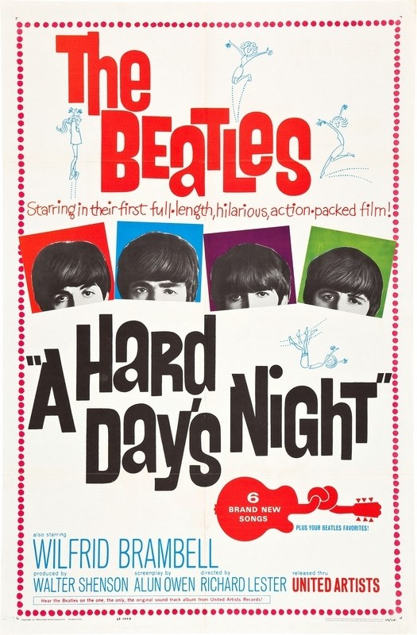
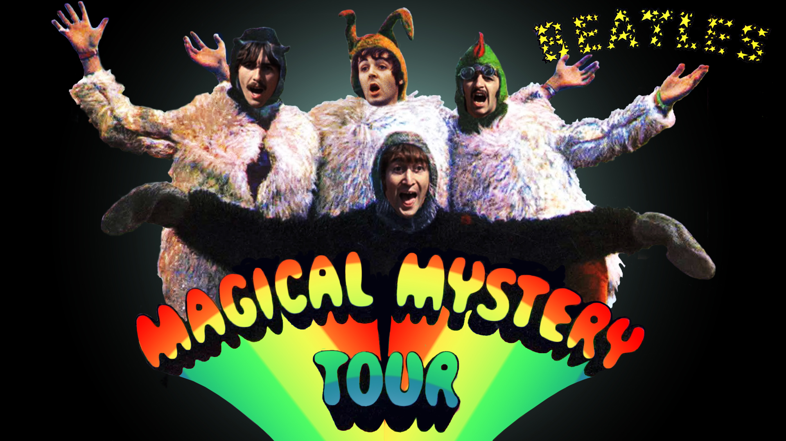

Главная | Общая информация | История | Фильмография | Дискография | Источники | Заказать альбом | Контакты
| Год | Русское название | Оригинальное название | Афиша | Примечание |
| 1964 | Вечер трудного дня | A Hard Day’s Night |  | Х/ф |
| 1965 | На помощь! | Help! | | Х/ф |
| 1967 | Волшебное таинственное путешествие | Magical Mystery Tour |  | Х/ф |
| 1968 | Жёлтая подводная лодка | Yellow Submarine | | М/ф |
| 1970 | Пусть будет так | Let It Be | | Д/ф |
© Все права защищены.